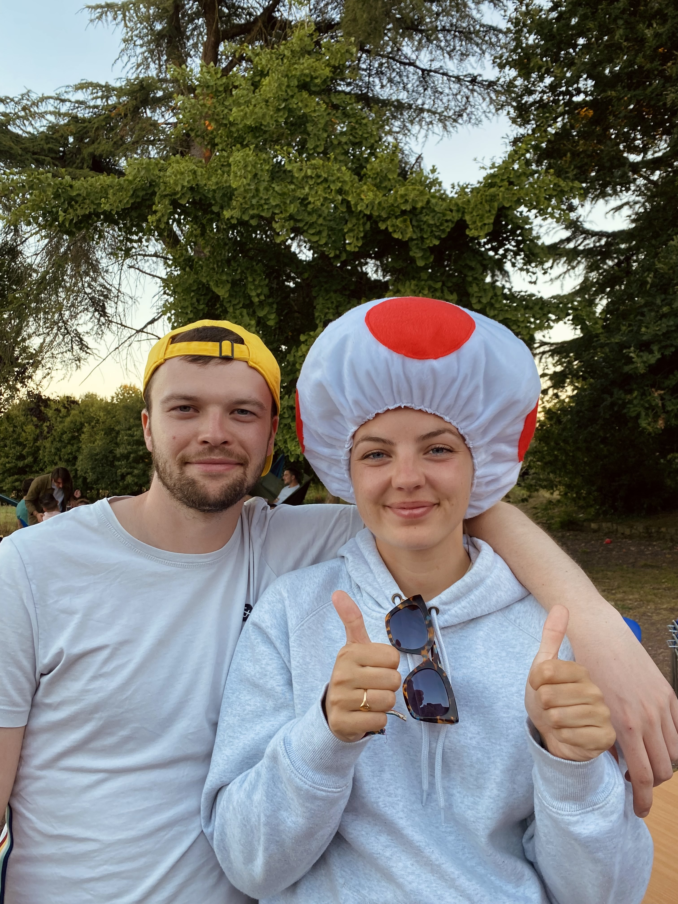

La cave fleurie
Arrosé [a.ʁo.ze] n. p. : lieu où se mêle l'odeur du bois des caisses de vins à celle des fleurs de saisons. Lieu chaleureux où les papilles se régalent autant que les yeux. Lieu qui n'attend que vous.
Nous, c'est Erell et Tanguy, des copains de longue date. Originaires de Trébeurden et de Lannion, nous sommes passés par la capitale au début de notre vie professionnelle, ce qui nous a permis de nous rendre compte de trois évidences :
De ces trois points naît un projet commun : créer un lieu où nos deux univers se rencontrent, se côtoient et fonctionnent ensemble, chez nous. Vous souhaitez plus de détails ? Nous serons ravis de vous en dire plus à Arrosé, La Cave Fleurie.
